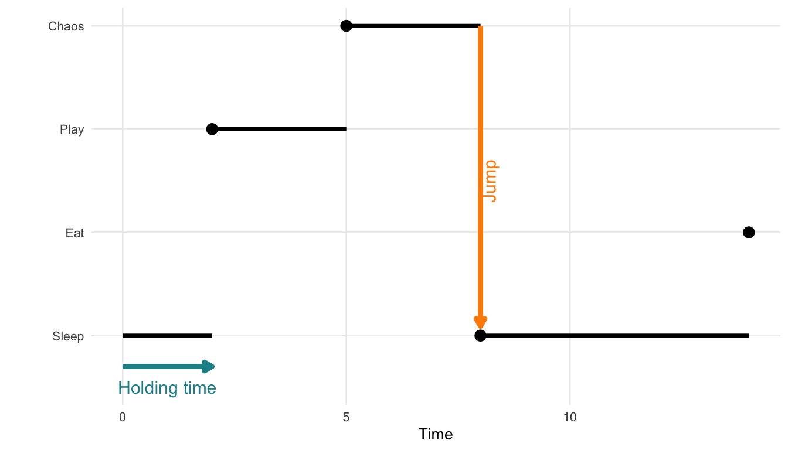
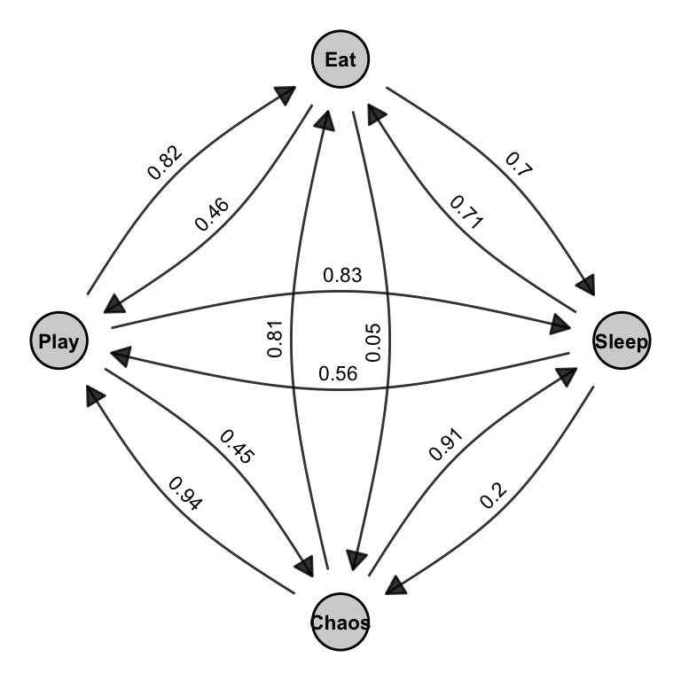
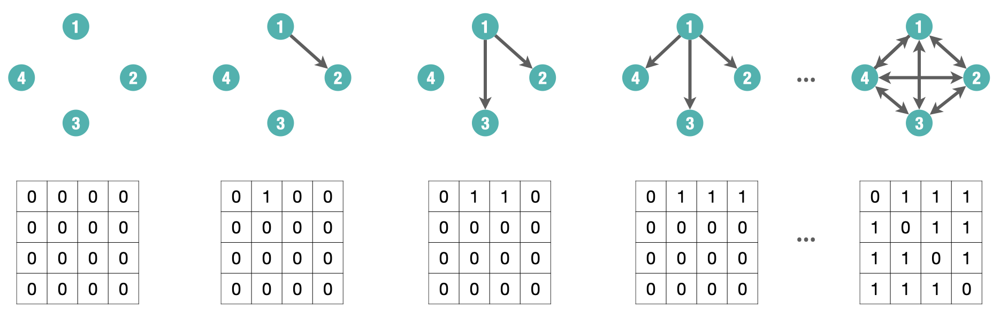

library(igraph)
library(ggraph)
library(graphlayouts)
library(networkdata)
library(intergraph)
library(RSiena)18 Stochastic Actor Oriented Models (SAOMs)
Up to this point, we have focused on modeling social networks as cross-sectional data, that is, as static snapshots of tie patterns observed at a single point in time. Models such as Erdős–Rényi, preferential attachment, and Exponential Random Graph Models (ERGMs) allow us to account for structural dependencies, attribute effects, and network complexity within such static networks.
However, social networks are inherently dynamic. Ties are not fixed; they emerge, dissolve, and evolve through time as a result of decisions made by individual actors. Treating network data as static ignores this core aspect of social life. A more realistic modeling approach must account for the sequential, actor-driven nature of network evolution.
This brings us to Stochastic Actor-Oriented Models (SAOMs), a class of models explicitly designed for longitudinal network data. Unlike cross-sectional models that treat the network as a single outcome, SAOMs treat the network as a continuous-time stochastic process driven by individual actor decisions. In this framework, changes to the network occur one tie at a time, reflecting micro-level decisions made by actors based on preferences, opportunities, and constraints.
SAOMs are particularly well-suited for panel data, i.e., multiple observations of the same network over time where both tie structures and actor attributes may co-evolve. This allows researchers to address questions such as:
- How often do actors initiate or terminate ties?
- Do actors prefer to form ties based on similarity (selection) or become more similar after forming ties (influence)?
- How do structural tendencies like reciprocity or transitivity manifest through sequential decision-making?
- Can we simulate or predict how the network may evolve in future time points?
SAOMs are one of two main frameworks for dynamic network modeling. The other is the Temporal Exponential Random Graph Model (TERGM). While TERGMs extend ERGMs to panel data by conditioning on past networks, SAOMs take a process-based view that explicitly models how ties change over time due to actor decisions.
Table 18.1 shows the core differences between ERGMs. While ERGMs model the global structure of a network at a single point in time, SAOMs treat network evolution as a dynamic process driven by actors making sequential decisions. In othr words, SAOMs extend the logic of ERGMs into the temporal domain, capturing the mechanisms of change rather than just the final structure.
| ERGMs | SAOMs | |
|---|---|---|
| Data type | Cross-sectional (static snapshot) | Longitudinal (panel data, repeated observations) |
| Unit of analysis | The entire network | Individual actor decisions |
| Modeling approach | Statistical dependence among ties | Actor-based tie change process |
| Time modeling | No time dimension | Continuous-time change process |
| Common mechanisms | Reciprocity, transitivity, nodal covariates | Same, but expressed as actor preferences over changes |
| Estimation method | MCMC Maximum Likelihood (MCMCMLE) | Simulation-based Method of Moments (MoM) |
| Outcome | Probability of the observed network | Simulated network trajectories over time |
| In R | ergm (or statnet) |
RSiena |
In what follows, we focus on the SAOM framework, its components, estimation process, and how it can be used to explain and simulate network evolution.
18.1 Packages Needed for this Chapter
18.1.1 Example: Teenage Friends and Lifestyle Study
We use a running example with data from the “Teenage Friends and Lifestyle Study” (West and Sweeting 1996), which was also used in the previous chapter on ERGMs. In contrast to the earlier example that focused on a single time point and only the subset of 50 pupils, we here model the dynamics of friendship ties across all three observed waves and with the 129 pupils over all three time points, and including relevant actor-level covariates such as gender and smoking behavior. The dataset is called glasgow129 in the networkdata package, which includes the following:
- Networks: Binary, directed friendship ties measured at three time points.
- Actors: 129 pupils measured at three time points.
- Many covariates, but we focus on
- Sex: 1 = Male, 2 = Female
- Smoking: 1 = No, 2 = Occasional, 3 = Regular
We load the data from the networkdata package and extract a graph object for each time peiod:
# Load data as graph object from networkdata and extract all three wave networks
glasgow_g1 <- networkdata::glasgow129[[1]]
glasgow_g2 <- networkdata::glasgow129[[2]]
glasgow_g3 <- networkdata::glasgow129[[3]]These igraph objects are our network snapshots and consider various SAOMs. We begin by converting each network snapshot into a binary adjacency matrix. These matrices represent the presence or absence of directed ties between actors at each time point.
# Convert to adjacency matrices
net1 <- as.matrix(as_adjacency_matrix(glasgow_g1, sparse = FALSE))
net2 <- as.matrix(as_adjacency_matrix(glasgow_g2, sparse = FALSE))
net3 <- as.matrix(as_adjacency_matrix(glasgow_g3, sparse = FALSE))We then combine them into a 3-dimensional array with dimensions [actor × actor × wave], which is the required format for longitudinal network data in RSiena:
# Combine into 3D array [actor x actor x wave]
net_array <- array(c(net1, net2, net3), dim = c(129, 129, 3))18.2 Modeling Network Evolution
Most real-world social networks are dynamic systems. Relationships between individuals form, dissolve, and evolve as a result of ongoing social interactions, personal decisions, and contextual factors. When we observe a single snapshot of a network, we can only speculate about the processes that produced it. By contrast, longitudinal network data, repeated observations of a network over time, allow us to move from static description to dynamic explanation.
Longitudinal network data consist of a set of actors \(N = \{1, 2, \dots, n\}\) and a series of observed adjacency matrices: \[ x(t_0),\ x(t_1),\ \dots,\ x(t_M) \] where each matrix captures the presence or absence of ties between actors at a particular time point.
These repeated measures make it possible to ask and answer key questions:
- How frequently do actors change their ties?
- What drives the formation, maintenance, or dissolution of ties?
- How do individual attributes (e.g., gender, age, group membership) shape network dynamics?
- Can we predict how the network will evolve in the future?
- How do both endogenous (network-based) and exogenous (attribute-based) factors jointly shape the network?
Moreover, understanding why networks change requires distinguishing between competing explanations. For instance, if we observe that two similar actors are connected at time \(t_1\), this might reflect selection (they formed a tie because of their similarity) or influence (they became similar after forming a tie). Only a longitudinal framework allows us to tease apart these mechanisms.
Time also matters for structural tendencies. Consider transitivity: when we observe a triadic closure (i.e., if \(i\) is tied to \(j\) and \(j\) to \(h\), then \(i\) may become tied to \(h\)), we cannot know whether it reflects an intentional closure or merely a residual pattern without knowing the order in which ties appeared.
Stochastic Actor-Oriented Models (SAOMs) offer a solution by treating network change as a continuous-time, actor-driven process. In this framework:
- The network evolves through a sequence of micro-steps where individual actors have opportunities to change their outgoing ties.
- Each actor evaluates the current network and makes decisions based on preferences (e.g., for reciprocation, closure, or similarity).
- The model simulates the timing and direction of these changes between observation moments (waves).
This actor-oriented perspective aligns closely with how ties form in real life: individuals decide whom to connect with (or disconnect from), guided by structural cues and attribute-based tendencies.
In the next section, we will formalize this logic, introduce the core components of SAOMs, and show how the RSiena package implements these models for empirical analysis.
18.2.1 Stochastic Processes and Continuous-Time Markov Chains
To understand the dynamics of network evolution in Stochastic Actor-Oriented Models (SAOMs), it is helpful to first grasp the concept of a stochastic process; a collection of random variables indexed by time:
\[ \{ X(t), t \in T \} \] where:
- \(T\) is the index set (typically representing time),
- \(S\) is the state space, the set of all possible values that \(X(t)\) can take.
A particular type of stochastic process relevant to SAOMs is the continuous-time Markov chain (CTMC). A CTMC is defined by:
- A finite state space \(S\) (e.g., actor states or network configurations),
- A continuous time domain \(t \in [0, \infty)\),
- The Markov property: the future state depends only on the present state, not the past: \[ P(X(t_j) = x_j \mid X(t) = x(t), \, \forall t \leq t_i) = P(X(t_j) = x_j \mid X(t_i) = x_i) \] This memoryless property allows us to model tie changes or actor decisions that depend only on the current configuration.
The CTMC evolves through a sequence of randomly timed transitions. Each state is held for a random duration, and transitions to the next state are governed by probability. More formally, a CTMC is characterized by:
- When a change occurs: governed by the holding time, typically modeled with an exponential distribution.
- What the next state is: determined by the jump matrix, which specifies the transition probabilities between states.
Together, holding time and jump probabilities define the full behavior of the CTMC.
Example: A Cat’s Daily Activities
To bring the concept of a continuous-time Markov chain (CTMC) to life (or to all nine lives of our cat) consider a model of a house cat’s daily activities. At any given moment, the cat is in one of the following behavioral states:
- \(0\): Sleeping
- \(1\): Eating
- \(2\): Playing
- \(3\): Plotting chaos (e.g., knocking things off shelves)
We define \(X(t)\) as the cat’s current activity at time \(t\). The process \(\{X(t), t \geq 0\}\) satisfies:
- A finite state space \(S = \{0, 1, 2, 3\}\)
- Continuous transitions over time
- The Markov property: next state depends only on the current state
The cat transitions between states at random times. Each stay in a state lasts for a random holding time, and transitions to the next state occur probabilistically based on a jump matrix.
The holding time \(T_i\) in state \(i\) is modeled using an exponential distribution: \[ f_{T_i}(t) = \lambda_i e^{-\lambda_i t}, \quad t > 0 \]
- \(\lambda_i\) is the rate of leaving state \(i\).
- \(\mathbb{E}[T_i] = \frac{1}{\lambda_i}\) is the expected duration in state \(i\).
The exponential distribution’s memoryless property means that the probability of remaining in a state is independent of how long the cat has already been in it: \[ P(T_i > s + t \mid T_i > t) = P(T_i > s) \] So, even after two hours of napping, the chance that the cat naps another 30 minutes is the same as if it had just started.
Once the holding time ends, the cat jumps to a new state. The transition matrix \(P = (p_{ij})\) governs this: \[ p_{ij} = P(X(t') = j \mid X(t) = i) \] For each state \(i\), the row of probabilities \(p_{ij}\) must sum to 1: \[ \sum_{j \in S} p_{ij} = 1 \]
Figure 18.1 illustrates a single realization of such a process. This visual shows how a process starting in state 0 might stay there for some time, then jump to state 2, then state 3, and so on, with irregular intervals between jumps.

Below is a hypothetical transition matrix \(P\) for the cat’s behavioral states. Each row corresponds to the current state, and each column to the next state:
| Sleep | Eat | Play | Chaos | |
|---|---|---|---|---|
| Sleep | 0.00 | 0.70 | 0.83 | 0.56 |
| Eat | 0.71 | 0.00 | 0.81 | 0.20 |
| Play | 0.05 | 0.82 | 0.00 | 0.45 |
| Chaos | 0.91 | 0.46 | 0.61 | 0.00 |
Note: Diagonal entries (e.g., Sleep → Sleep) are set to zero for interpretability. They can be included to model the probability of no state change.
Next, we can combine the states and transitions into a directed graph showing which states can be reached from one another, and with what likelihood. This is shown in Figure 18.2.

Figure 18.2 is a visual representation of this matrix. Each arrow in the graph corresponds to a non-zero entry \(p_{ij}\) in the matrix. The curved edges indicate transitions between pairs of states, and the labels on the arrows match the values in the matrix. Together, the matrix and the graph describe a jump chain over the set of behavioral states. These transitions are stochastic (i.e., random), and their dynamics unfold in continuous time, which is what differentiates CTMCs from discrete-time Markov models.
In summary, a Continuous-Time Markov Chain (CTMC):
- Determines how long the system remains in a state using the holding time, typically modeled as exponentially distributed.
- Uses a transition matrix (or jump matrix) to govern which state is entered next.
- Is memoryless and evolves in continuous time, meaning the future depends only on the present state and not the past.
These principles underpin Stochastic Actor-Oriented Models (SAOMs), where actors make sequential and probabilistic changes to their network ties or attributes, driven solely by the current network state.
18.2.2 Definition of SAOMs
Stochastic Actor-Oriented Models (SAOMs), introduced by Snijders (1996), provide a principled framework for analyzing how social networks evolve over time. To formally define the model, we start by framing them as a type of continuous-time Markov chain (CTMC), operating on a network space.
As previously introduced, a Continuous-Time Markov Chain (CTMC) is characterized by three key components:
- A finite state space: For SAOMs, this space includes all possible directed networks (i.e., all adjacency matrices) that can be constructed from \(n\) actors.
- A continuous-time process: Network changes (such as the creation or dissolution of ties) occur at random, unpredictable points in time.
- The Markov property: The likelihood of a transition depends solely on the network’s current configuration, not on how it arrived there.
In the sections that follow, we explore how each of these components applies specifically to SAOMs.
18.2.2.1 State Space of Networks
Let \(X\) be the set of all possible adjacency matrices (i.e., network configurations) defined on \(n\) actors. Each matrix corresponds to a different possible state of the network. The size of this space is:
\[ |X| = 2^{n(n-1)} \]
This comes from the fact that each of the \(n(n-1)\) possible directed ties between distinct actors can independently be either present (1) or absent (0).
For instance, with a 4-node directed network shown in Figure 18.3, we can represent different adjacency matrices as the network evolves over time. We see a step-by-step representation of how a network evolves through successive tie changes, starting from an empty network and progressing toward a fully connected one.

18.2.2.2 Continuous-time process
Stochastic Actor-Oriented Models (SAOMs) are based on the assumption that social networks evolve as a continuous-time Markov process. This means the network changes gradually and randomly over time through small, actor-driven steps such as adding or removing ties.
However, in empirical studies, we rarely observe the full trajectory of these changes. Instead, we only see the network at a limited number of discrete observation moments (e.g., survey waves at \(t_1\), \(t_2\), \(\ldots\)). The actual tie changes (who added or dropped a connection and when) occur in the unobserved latent process between these time points.
This distinction is critical:
- Observed process: snapshots of the network at specific time points.
- Latent process: the underlying continuous sequence of micro-steps, where actors make sequential, stochastic decisions based on the current state of the network.
SAOMs aim to reconstruct and simulate this hidden evolution process, inferring the actor behaviors that most likely produced the observed transitions.
[image] network states evolve at \(t_0\), \(t_1\), …, but what we observe are discrete “snapshots” of this hidden continuous-time trajectory.
18.2.2.3 The Markov Property
A central assumption of Stochastic Actor-Oriented Models (SAOMs) is that the probability of moving to a new network state depends only on the current state, not on the path taken to get there. This is the Markov property and is formally defined as: \[ P(X(t_j) = x_j \mid X(t) = x(t), \, \forall t \leq t_i) = P(X(t_j) = x_j \mid X(t_i) = x_i) \] where \(X(t)\) denotes the state (i.e., network configuration) at time \(t\). In other words, the future evolution of the process depends solely on the present state \(x_i\) and not on the entire sequence of previous states. The model is memoryless: it “forgets” the past once the current state is known.
In the context of SAOMs, this means that when an actor is given the opportunity to make a change, such as forming or dissolving a tie, they do so based only on the present network structure and covariate information. There is no dependence on the path the network took to reach its current configuration.
This assumption significantly simplifies the modeling of network dynamics. It eliminates the need to track full network histories and allows for tractable simulation-based estimation. Conceptually, it also aligns with many social processes where actors respond to their current social environment rather than recalling a complete relational past.
Nonetheless, the Markov assumption is a modeling abstraction. While it facilitates analysis and interpretation, it may not capture certain behaviors where history matters such as long-term reciprocity, reputation building, or delayed responses. Still, for many applications, it offers a powerful and flexible framework for understanding how networks evolve over time.
18.2.2.4 Actor-Oriented Modeling Assumptions
A central challenge in modeling network dynamics is the vast number of possible future configurations. For a directed network with \(n\) actors, there are \(2^{n(n-1)}\) possible states, making exhaustive evaluation of all potential transitions computationally infeasible.
SAOMs address this by adopting an actor-driven approach. Instead of modeling global changes to the network, SAOMs assume that individual actors make decisions about their outgoing ties through a series of small, sequential updates. This simplifies the modeling process while remaining grounded in a realistic representation of social behavior.
The SAOM framework relies on three core assumptions:
One actor at a time: At each micro-step, a single actor is randomly selected and given the opportunity to revise their outgoing ties. This reflects individual, sequential decision-making.
One tie at a time: The selected actor may consider one outgoing tie; either forming it, dissolving it, or choosing to leave it unchanged. Only one tie can be changed per step, which keeps the space of possible transitions manageable.
Actor-controlled change: Each actor controls only their own outgoing ties. Tie changes arise solely from the actor’s individual evaluation of the network and are not the result of simultaneous or coordinated actions.
Together, these assumptions define a process of sequential micro-steps, each involving:
- Selecting an actor at random,
- Considering one possible tie change,
- And waiting a randomly determined time before the next opportunity arises.
This process unfolds in continuous time and follows the structure of a continuous-time Markov chain (CTMC). It consists of two key components: the holding time; which determines how long the current network state persists, and the jump chain; which defines the probability of transitioning to a new network state via a single tie change.
18.2.2.5 The Holding Time and The Jump Chain
The holding time in SAOMs refers to the waiting period before an actor is given the opportunity to change one of their outgoing ties. In accordance with the properties of a continuous-time Markov chain (CTMC), this waiting time is modeled as an exponentially distributed random variable.
For actor \(i\), the holding time \(T_i\) has the following probability density function: \[ f_{T_i}(t) = \lambda_i e^{-\lambda_i t}, \quad \lambda_i > 0, \quad t > 0 \] Here, \(\lambda_i\) is the rate parameter, determining how frequently actor \(i\) receives opportunities to change their ties. The choice of \(\lambda_i\) defines how the actor selection process unfolds:
- Homogeneous specification: All actors have the same rate \(\lambda\), implying equal opportunity: \[ \lambda_i = \lambda \quad \text{for all } i, \qquad P(i \text{ has opportunity for change}) = \frac{1}{n} \]
- Heterogeneous specification: The rate varies across actors based on covariates or network structure: \[ \lambda_i = \lambda_i(\theta, x, v) \] where \(\theta\) is a parameter vector, \(x\) is the current network configuration, and \(v\) are actor-specific covariates. In this case: \[ P(i \text{ has opportunity for change}) = \frac{\lambda_i(\theta, x, v)}{\sum_{j=1}^{n} \lambda_j(\theta, x, v)} \] This flexibility allows the model to reflect actor-level heterogeneity in the speed of network change. However, for simplicity and interpretability, we often assume that all actors have the same average rate of change, that is, \(\lambda\) is constant across actors, but may vary over time. In this case, actors are equally likely to be selected at any given moment, though the overall tempo of change can still shift over time depending on the time-varying rate parameter.
This setup relies on the memoryless property of the exponential distribution: \[ P(T_i > s + t \mid T_i > t) = P(T_i > s) \] That is, the probability that actor \(i\) will be selected in the next instant is unaffected by how long they have already been waiting. This property aligns naturally with the continuous-time Markov assumption and greatly simplifies simulation. In summary, the holding time determines when micro-steps occur. It is random, memoryless, and depending on the specification; either homogeneous or heterogeneous across actors, shaping the rhythm of network evolution in SAOMs.
Once an actor has been selected and the waiting time (holding time) has elapsed, the next question becomes: what change (if any) will this actor make to the network? This is where the jump chain which governs what change occurs once an actor is selected. At each micro-step, actor \(i\) evaluates a set of feasible alternatives \(\{x^{(1)}, x^{(2)}, \dots, x^{(J)}\}\), each differing from the current network \(x\) by a change in one of \(i\)’s outgoing ties; either forming, dissolving, or maintaining a tie.
Each alternative \(x^{(j)}\) is assigned a utility:
\[ U_{ij} = F_{ij} + \varepsilon_{ij} \]
Here, \(F_{ij}\) represents the deterministic component of the utility function typically defined through an evaluation function that incorporates structural effects like reciprocity, transitivity, or covariate similarity. The \(\varepsilon_{ij}\) term introduces randomness via a Gumbel-distributed disturbance, reflecting unobserved preferences or decision noise.
This setup defines a random utility model, where actor \(i\) selects among alternatives probabilistically rather than deterministically. Under the Gumbel assumption, the choice probabilities follow the familiar multinomial logit:
\[ p_{ij} = \frac{\exp(F_{ij})}{\sum_{h=1}^{J} \exp(F_{ih})} \]
These probabilities form a jump matrix \(P = (p_{ij})\), describing the likelihood of transitioning from one network state to another. Because only one actor can change one tie at each micro-step, the number of feasible transitions is small, and the matrix is extremely sparse; a feature that makes SAOMs computationally tractable even for large networks.
We can now elaborate more precisely on how this deterministic component \(F_{ij}\) is constructed. It is typically written as an objective function composed of weighted network statistics:
\[ f_i(\theta, x') = \sum_{k=1}^{K} \theta_k \cdot s_k(x', v) \] where:
- \(x'\) is the candidate network after a tie change,
- \(s_k(x', v)\) is the \(k\)-th effect evaluated on \(x'\) (e.g., number of mutual ties),
- \(\theta_k\) is the parameter associated with that effect.
This formulation provides a clear interpretation: actors evaluate the desirability of possible tie changes based on known network mechanisms and covariates. The random utility formulation introduces variability in behavior while allowing estimation of interpretable model parameters \(\theta\).
In summary, the jump chain models which network configuration the process will move to, conditional on actor selection. Combined with the holding time, which governs when actors are selected, it defines the dynamics of the SAOM as a continuous-time Markov process. Actor decisions are sequential, stochastic, and based only on the current network, thus preserving the Markov property and allowing for rich but tractable modeling of network evolution.
18.2.2.6 Endogenous Effects in the Objective Function
The objective function introduced above is composed of a linear combination of effects, each capturing a specific structural pattern or social mechanism. These effects are conceptually similar to those used in Exponential Random Graph Models (ERGMs), although they differ in interpretation due to the dynamic and actor-oriented nature of SAOMs.These effects fall into two main categories:
- Endogenous effects: derived from the structure of the network itself.
- Exogenous effects: related to external actor attributes.
The objective function for actor \(i\) evaluating network \(x'\) can be written as: \[ f_i(x') = \sum_k \theta_k \cdot s_{ik}(x’) \] where \(\theta_k\) is the parameter for effect \(k\), and \(s_{ik}(x')\) is the statistic for effect \(k\) as computed for actor \(i\) in network \(x'\). Each effect enters the evaluation function with an associated parameter to be estimated from data. The weighted sum of these effects (plus random noise) determines the actor’s utility for each potential tie change. This guides the probabilistic decision-making process at the heart of the SAOM framework.
This section focuses on a few commonly used endogenous effect; those based solely on the structure of the network (without using external covariates). Many other effects can be modeled, depending on the theoretical focus and complexity of the network under study.
1. Outdegree Effect
Similar to the edges term in ERGM, this effect reflects the tendency (or cost) of maintaining ties. It counts the number of outgoing ties from actor \(i\) in the new network configuration \(x'\):
\[ s_i^{\text{out}}(x’) = \sum_j x’_{ij} \] This term typically has a negative coefficient, penalizing actors for having too many ties, and thus introducing a cost to maintaining social relationships.
2. Reciprocity Effect
The reciprocity effect captures the tendency for actors to form mutual ties (equivalent to the mutual term in ERGMs). It counts how many of actor i’s outgoing ties are reciprocated: \[
s_i^{\text{rec}}(x') = \sum_j x'{ij} x'{ji}
\] A positive coefficient for this effect reflects a preference for mutual connections, e.g., “I send a tie to those who also send one to me.”
3. Transitive Triplets Effect
Closely related to the triangles or GWESP terms in ERGMs, this effect models triadic closure. The transitive effect reflects a tendency for triadic closure. If actor \(i\) sends a tie to \(h\), and \(h\) sends a tie to \(j\), then \(i\) is more likely to send a tie to \(j\):
\[ s_i^{\text{trans}}(x’) = \sum_{j,h} x’{ij} x’{ih} x’_{hj} \] This effect models social closure or hierarchy and contributes to the formation of cohesive subgroups or cliques.
4. Three-Cycle Effect
The three-cycle effect (think cyclic triads in ERGMs) captures the tendency of actors to form circular structures in the network, i.e. it captures feedback loops in the network. Specifically, it counts the number of directed cycles of length three involving actor \(i\): \[ s_i^{\text{cyc}}(x') = \sum_{j,h} x'{ij} x'{jh} x'_{hi} \] This effect often receives a negative coefficient, discouraging cyclic patterns that may indicate instability or lack of hierarchy.
Next, we introduce exogenous effects, which link actor behavior to covariates such as attributes or group memberships.
18.2.2.7 Exogenous Effects in the Objective Function
In addition to modeling endogenous network tendencies, like reciprocity or transitivity, SAOMs allow the inclusion of exogenous covariates that influence tie formation. These covariates may pertain to individual-level attributes (e.g., age, status, gender) or to dyadic relationships (e.g., geographical distance, attribute similarity). Just like in ERGMs, these effects enter the objective function, which represents the utility an actor associates with each possible network configuration.
Below are common types of exogenous effects.
1.Individual-Level Covariate Effects
These are based on node-level covariates and can enter the objective function in two ways:
Covariate-Ego Effect
This effect captures whether actors with a particular covariate value are more (or less) likely to form ties. \[ s_i^{\text{ego}}(x', v) = v_i \sum_j x'_{ij} \] Here, \(v_i\) is the covariate value for actor \(i\) (the sender), and the statistic counts how many ties they initiate. If the covariate is binary, this can test whether having a trait (e.g., being in a particular group) is associated with being more active.Covariate-Alter Effect
This reflects a preference for forming ties to others with certain attribute values. \[ s_i^{\text{alter}}(x', v) = \sum_j x'_{ij} v_j \] Actors are more likely to send ties to alters with higher (or lower) covariate values, depending on the sign of the corresponding parameter.
2. Dyadic Covariate Effects
SAOMs also allow modeling based on dyadic similarity, capturing whether actors prefer to connect with others who are similar in some attribute.
The statistic for covariate-related similarity \[ s_i^{\text{sim}}(x', v) = \sum_j x'_{ij} \left( 1 - \frac{|v_i - v_j|}{\text{Range}(v)} \right) \] increases when \(i\) sends ties to actors \(j\) who are similar in covariate values. The similarity is normalized to a [0,1] scale, where 1 means perfect similarity. For binary covariates, this simplifies to an indicator function: \[ s_i^{\text{sim}}(x', v) = \sum_j x'_{ij} \cdot I(v_i = v_j) \]
This captures simple homophily; a tendency to connect with others who share the same attribute (e.g., same gender or group membership).
18.2.2.8 Choosing Effects for the Objective Function
When specifying a Stochastic Actor-Oriented Model (SAOM), selecting which effects to include in the actor’s objective function is the first step. At a minimum, outdegree (a baseline tendency to form ties) and reciprocity (the preference for mutual ties) must always be included. Beyond these, additional effects should be guided by substantive theory or research hypotheses. For example, if theory suggests that individuals tend to befriend friends of their friends, a transitive triplet effect may be appropriate. If social similarity (homophily) based on covariates like gender is expected, covariate-related similarity effects can be added. These choices tailor the model to reflect specific structural patterns or attribute-driven mechanisms. While only a few examples are shown here, SAOMs offer a broad range of endogenous and exogenous effects that researchers can incorporate to test theoretically meaningful network processes.
18.2.3 Parameter Estimation and Interpration
In Stochastic Actor-Oriented Models (SAOMs), each parameter \(\beta_k\) quantifies the importance of a specific effect \(s_{ik}(x')\) in the actor’s decision-making process during network evolution. These parameters help us understand how different structural or covariate-based features influence the likelihood of a network configuration.
The interpretation of \(\beta_k\) is as follows:
- If \(\theta_k = 0\), the statistic \(s_{ik}(x')\) has no effect on the transition probabilities and thus plays no role in the network dynamics.
- If \(\theta_k > 0\), actor \(i\) is more likely to move toward a network configuration \(x'\) with a higher value of \(s_{ik}(x')\).
- If \(\beta_k < 0\), configurations with lower values of \(s_{ik}(x')\) are more attractive to the actor.
Importantly, these preferences are assumed to be stable over time. That is, the entire set of model parameters \(\{\theta_1, \dots, \theta_K\}\) is constant, meaning the way actors evaluate alternatives does not change during the observation window. \[
\theta_1, \dots, \theta_K \text{ are constant over time}
\] Parameter estimation in SAOMs is performed using simulation-based methods, as implemented in the RSiena R package (SIENA: Simulation Investigation for Empirical Network Analysis).
The core idea is to simulate the network evolution process under the assumed model, compare the simulated outcomes with observed data, and iteratively adjust parameters to improve the fit. This is known as the method of moments, where the simulated statistics are aligned with their empirical counterparts.
The estimation process typically involves:
- Defining the observed networks at multiple time points.
- Specifying effects (endogenous and exogenous) to include in the model.
- Running simulations to estimate parameters via iterative optimization.
To assess whether a particular effect significantly contributes to the network dynamics, we can conduct a hypothesis test for each parameter \(\theta_k\). We test the following:
- Null Hypothesis (\(H_0\)): The observed network patterns related to effect \(k\) are due to chance. \[ H_0 : \theta_k = 0 \]
- Alternative Hypothesis (\(H_1\)): The effect has a systematic, non-random influence on tie changes. \[ H_1 : \theta_k \ne 0 \] Under standard conditions, we use the ratio of the parameter estimate to its standard error (i.e., a t-score) as a test statistic:
\[ \left| \frac{\theta_k}{\text{s.e.}(\theta_k)} \right| \ge 2 \Rightarrow \text{Reject } H_0 \]
If the absolute t-score exceeds 2, we consider the parameter significantly different from 0 at approximately the 5% significance level.
18.2.4 RSiena
RSiena is an R package for estimating and simulating SAOMs for network and behavior dynamics. It is specifically designed to model longitudinal network data, where social ties and actor attributes evolve over time.
In RSiena, the distinction between modeling the evolution of networks and the co-evolution of networks and behavior begins with how the dependent variable is defined.
If only the network is included as a dependent variable, the model focuses on network evolution. This framework captures how actors form, maintain, or dissolve ties over time, and it can include covariates (such as gender or smoking status) to explain social selection. In this case, individual attributes influence the likelihood of tie formation or dissolution, but actors’ own behaviors remain fixed over time.
Alternatively, RSiena allows for co-evolution models by including both a network and a behavioral variable as dependent variables. This setup enables the simultaneous modeling of two processes: how networks evolve and how actors’ behaviors change. This makes it possible to study social influence, where individuals may adopt behaviors similar to those of their network peers. The model thus estimates both the selection of network ties based on covariates and the influence of peers on individual behavior over time.
Below, we consider a few models that are run in RSiena, and for each model we consider the following:
Preparing the data
Import and format the network and covariate data into the appropriate structure. This includes creating adjacency matrices for networks over time and vectors or matrices for actor-level covariates. These are then converted intosienaDependent,coCovar, orvarCovarobjects.Specifying the model
Define the model structure by selecting the effects to include. UsegetEffects()to retrieve the default effects object andincludeEffects()to specify additional endogenous and covariate-related effects.Estimating the model Set up the estimation procedure using
sienaAlgorithmCreate()and run the model withsiena07(). Evaluate model convergence and estimation diagnostics to ensure reliable results.Interpreting the results
Analyze the estimated parameters to understand the underlying social processes. This involves examining effect directions, magnitudes, and statistical significance to interpret mechanisms of network change or co-evolution.
18.2.4.1 Model 1: Structural Effects
We start by estimating a simple model specification that includes only two effects: an outdegree (density) term and a reciprocity term, capturing baseline tie propensity and mutual tie preference without incorporating more complex structural or covariate-based influences. In other words, we are not including any covariates, so the model is specified purely in terms of endogenous network dynamics.
We convert the 3D network array net_array into a sienaDependent object using the sienaDependent() function. This step tells RSiena that the array represents a dependent network variable observed over multiple waves. The resulting object will be used as input in the model definition and estimation.
# Convert array into RSiena dependent object
siena_net <- sienaDependent(net_array)After defining the network as a sienaDependent object, we now wrap it into a complete RSiena data object using sienaDataCreate(). This function prepares the data for model specification and estimation by bundling all input variables (here just the network) into a structure that the estimation algorithm can use.
Since we are modeling only the network (and no actor covariates yet), we simply pass siena_net as the argument.
# Create a Siena data object
data_mod1 <- sienaDataCreate(siena_net)In RSiena, model specification is driven by the concept of “effects” which represent the structural features, covariate influences, and behavioral mechanisms that are hypothesized to drive network or behavioral change. By default, getEffects() lists all possible effects available for the data structure (e.g., network dynamics, covariates, behaviors). It doesn’t add any effects to the model yet though, it just initializes the structure that will hold them.
We begin by calling getEffects() on our friend_data object to create a default effects object. This object holds all possible effects for the given data structure and is used as a base for customization. You can have a look at these effects directly by calling it:
# Define the effects: start with default effect object
my_effects <- getEffects(data_mod1)
my_effects effectName include fix test initialValue parm
1 constant siena_net rate (period 1) TRUE FALSE FALSE 7.45424 0
2 constant siena_net rate (period 2) TRUE FALSE FALSE 6.82927 0
3 outdegree (density) TRUE FALSE FALSE -1.61299 0
4 reciprocity TRUE FALSE FALSE 0.00000 0 These are the exact effects included by default:
- Rate parameters for each wave transition (e.g., Period 1 and Period 2)
- Outdegree (density): capturing the baseline propensity to send ties
- Reciprocity: modeling the tendency to reciprocate received ties
Since our simple model includes only these two structural effects, there is no need to add further effects using includeEffects() at this stage.
Before running the estimation, we need to define the estimation algorithm that RSiena will use. This is done with the function sienaAlgorithmCreate(), which sets up the computational parameters for the simulation-based estimation process.
In the example below, we assign the algorithm to the object my_algorithm. The projname argument specifies a name for the project; RSiena will use this name to organize temporary output files and logs related to the estimation.
# Define the estimation algorithm
my_algorithm <- sienaAlgorithmCreate(projname = "saom_1", seed = 123)If you use this algorithm object, siena07 will create/use an output file saom_1.txt .
NoteNote on setting the seed
Setting a seed as argument ensures reproducible results across runs given same R setup. Due to the stochastic nature of the algorithm and differences in computational environments, minor variations may still occur across:
- different versions of R or RSiena,
- different operating systems,
- or when using parallel processing.
This algorithm object is later passed into the siena07() function to control how the estimation is performed. You can customize various settings like number of iterations, convergence thresholds, or use defaults (as we do here) for a basic estimation.
Now that we’ve set up the data, specified the effects, and defined the estimation algorithm, we can estimate the Stochastic Actor-Oriented Model using the siena07() function. This function runs the RSiena estimation procedure. It takes the following inputs:
my_algorithm: the algorithm settings we defined earlier.data = friend_data: the network data in RSiena format.effects = my_effects: the specified model effects (in this case, outdegree and reciprocity).batch = TRUE: suppresses user prompts during the estimation, making it suitable for scripted or automated runs.
# Estimate the SAOM
saom_1 <- siena07(
my_algorithm,
data = data_mod1,
effects = my_effects,
batch = TRUE
)To print a summary of the estimation results:
# View results
saom_1Estimates, standard errors and convergence t-ratios
Estimate Standard Convergence
Error t-ratio
Rate parameters:
0.1 Rate parameter period 1 8.5797 ( 0.6983 )
0.2 Rate parameter period 2 7.2383 ( 0.6048 )
Other parameters:
1. eval outdegree (density) -2.4114 ( 0.0407 ) -0.0013
2. eval reciprocity 2.7049 ( 0.0858 ) -0.0252
Overall maximum convergence ratio: 0.0396
Total of 2412 iteration steps.A nicer summary of the model is obtained by running the following which saves the table of results as an html file (including significance stars for easy interpretation):
siena.table(saom_1, type="html", sig=TRUE)So, how do we interpret the parameter estimates?
Before interpreting parameter estimates, it’s essential to assess whether the estimation has converged adequately. In RSiena, convergence is assessed using two main criteria:
Overall maximum convergence ratio: This value summarizes how far the simulated statistics deviate from the observed ones. A value below 0.25 is generally considered acceptable, with values below 0.15 indicating very good convergence.
Individual convergence t-ratios:
For each effect, the t-ratio compares the observed statistic to the average from the simulated networks. If the estimation has converged, these t-ratios should be close to zero. Values below 0.10 are ideal, and below 0.20 is generally acceptable.
Convergence Assessment
All convergence t-ratios in our Model 1 ouput are below 0.03, which suggests that the simulated statistics align closely with the observed network statistics for each parameter. This implies that the estimated model reproduces the key structural features of the observed data with high precision. Additionally, the overall maximum convergence ratio is 0.04, which is well below the commonly used threshold of 0.10, and even under the more conservative cutoff of 0.05. This means that none of the parameters are associated with poor convergence behavior. Taken together, these diagnostics confirm that the SAOM estimation process has stabilized, and the parameter estimates can be interpreted with confidence.
Rate Parameters
The rate parameters capture how frequently actors are given the opportunity to change their outgoing ties between two consecutive observation moments. These are modeled as Poisson-like intensities in a continuous-time Markov framework. The table below provides the estimates and their interpretation:
Rate 1: Estimate = 8.580 (SE = 0.698)
On average, each actor had around 9 opportunities to change a tie between waves 1 and 2.Rate 2: Estimate = 7.238 (SE = 0.605)
On average, each actor had around 7 opportunities to change a tie between waves 2 and 3.
These values do not indicate how many changes were actually made, but how often actors could have made a change. Since actors may choose not to change a tie (i.e., they maintain the current state), the actual number of changes is usually lower than the number of opportunities. This is why rate parameters typically exceed the observed average number of tie changes per actor.
Network Dynamics
Once an actor has the opportunity to change, their decision is guided by an objective function that evaluates possible alternative network states. Each effect included in the model represents a social mechanism or hypothesis about actor preferences. The estimated coefficients reflect the direction and strength of these preferences. The table below summarizes the main effects from the model:
Outdegree (density): Estimate = –2.411 (SE = 0.041) Strong negative effect: actors are generally reluctant to form many ties.
Reciprocity: Estimate = 2.705 (SE = 0.086)
Strong positive effect: actors strongly prefer to reciprocate existing ties. |
The interpretation of each parameter is as follows:
Outdegree (density) parameter: \(\theta_\text{out} = -2.411\) A strong negative value suggests that actors prefer sparser networks. Forming new ties is costly or undesirable unless balanced by other effects. The more ties an actor has, the lower their objective function, making additional ties increasingly unlikely.
Reciprocity parameter: \(\theta_\text{rec} = 2.705\)
This strong positive value reflects a strong preference for reciprocating existing ties. If another actor has already sent a tie to ego, ego is much more likely to return the tie.
Both estimates are statistically significant, as their t-ratios are well above 2. This supports the conclusion that density aversion and reciprocity are key mechanisms shaping the network.
These effects form part of each actor’s utility function when evaluating potential changes. For actor \(i\), the objective function can be written as:
\[ f_i(x') = \theta_\text{out} \sum_{j=1}^n x'_{ij} + \theta_\text{rec} \sum_{j=1}^n x'_{ij} x'_{ji} \]
Let’s consider two scenarios:
- Adding a reciprocated tie
Suppose \(x_{ji} = 1\) (the other actor already sent a tie), and ego adds \(x_{ij} = 1\) to reciprocate. The utility change is:
\[ -2.411 + 2.705 = 0.294 \]
This results in a positive utility, indicating that the move is likely.
- Adding a non-reciprocated tie If \(x_{ji} = 0\), the tie is unreciprocated. The utility is:
\[ -2.411 \]
This is negative utility, indicating that the change is unlikely.
Overall, the estimation results reveal that actors prefer to reciprocate existing ties and are generally cautious about forming many new ties. Reciprocated ties offer positive utility, while unreciprocated ties are penalized. These preferences are consistent with well-known social mechanisms: a desire for mutual relationships and an aversion to the costs of maintaining numerous social ties.
18.2.4.2 Model 2: Structural + Covariate Effects
Sociological theory suggests that, beyond general tendencies for reciprocity and transitivity, actors are influenced by individual characteristics when forming or maintaining ties. In adolescent friendship networks, one of the most important predictors of tie formation is behavioral similarity, such as shared lifestyle choices or habits.
Having established the basic SAOM using only endogenous structural effects above (like outdegree and reciprocity), we now extend the model to account for actor-level covariates. By incorporating exogenous attributes such as sex and smoking behavior, we can investigate how individual characteristics shape tie formation in addition to the structural patterns already captured. This richer specification allows us to test more nuanced hypotheses about social selection and influence mechanisms working within the network.
As mentioned in Section 18.2.2.7, incorporating covariates into the objective function means we need to differentiate between:
- Ego effects: How an actor’s own covariate value influences their tendency to form or maintain ties (e.g., do smokers send more ties?).
- Alter effects: How the recipient’s covariate value affects the likelihood of receiving a tie (e.g., are smokers more likely to be chosen as friends?).
- Similarity effects: Whether actors prefer to form ties with others who are similar to themselves in a given attribute (e.g., are adolescents more likely to befriend others with similar smoking behavior?).
This new specification remains actor-oriented and stochastic, but adds an important layer of covariate-based preference, allowing us to distinguish between purely structural mechanisms and individual-level traits influencing network evolution. It also aligns more closely with theoretical insights from social psychology and adolescent health research.
Building on the simple structural model (Model 1) that included only the outdegree (density) and reciprocity effects, we now extend our specification to incorporate exogenous covariate information resulting in a more nuanced model of friendship dynamics.
In our Model 2 here, we treat sex as a fixed covariate and smoking as a changing covariate, measured at each wave. We now include the following effects in addition to the structural ones:
- Ego effect of smoking: Does an adolescent’s smoking status affect how many ties they send?
- Alter effect of smoking: Are smokers more popular in the network?
- Similarity in smoking: Are adolescents more likely to form ties with others who smoke similarly?
- Sex effects: These can be included to examine tie formation with respect to the sex of the pupil.
In sum, Model 2 captures not only who adolescents choose to befriend structurally, but also how individual traits shape social dynamics providing a more realistic and theoretically grounded model of network evolution.
We begin by converting the 3D network array we created above into a sienaDependent object:
# Convert array into RSiena dependent object
siena_net <- sienaDependent(net_array)Like before, this object represents the longitudinal network that serves as the dependent variable in the SAOM. Different from before, we extract covariate values from the network’s node attributes. Sex (sex.F) is treated as a time-invariant covariate, while smoking behavior (familysmoking) is treated as time-varying across the three network waves.
# Extract sex (constant over all waves) and recode to numeric: 1 = Female, 0 = Male
sex_char <- V(glasgow_g2)$sex.F
sex_num <- ifelse(sex_char == "F", 1,
ifelse(sex_char == "M", 0, NA))
# convert to fixed covariate object
sex_cov <- coCovar(sex_num)
# Extract smoking behavior (assumed changing)
smoke1 <- as.numeric(V(glasgow_g1)$tobacco)
smoke2 <- as.numeric(V(glasgow_g2)$tobacco)
smoke3 <- as.numeric(V(glasgow_g3)$tobacco)
smoking_array <- cbind(smoke1, smoke2, smoke3)
# convert to changing covariate object
smoking_cov <- varCovar(smoking_array)Next we combine the network and covariates into a single Siena data object that will be used for estimation.
data_mod2 <- sienaDataCreate(siena_net, sex_cov, smoking_cov)We define the effects to be included in the model. This includes structural effects (like outdegree, reciprocity, and transitive triplets) as well as ego, alter, and similarity effects for both sex and smoking covariates.
# Start with the default effect set
my_effects <- getEffects(data_mod2)
# Add structural effects
my_effects <- includeEffects(my_effects, outdegree, recip, transTrip) effectName include fix test initialValue parm
1 reciprocity TRUE FALSE FALSE 0 0
2 transitive triplets TRUE FALSE FALSE 0 0 # Add effects for sex
my_effects <- includeEffects(my_effects, egoX, altX, simX, interaction1 = "sex_cov") effectName include fix test initialValue parm
1 sex_cov alter TRUE FALSE FALSE 0 0
2 sex_cov ego TRUE FALSE FALSE 0 0
3 sex_cov similarity TRUE FALSE FALSE 0 0 # Add effects for smoking
my_effects <- includeEffects(my_effects, egoX, altX, simX, interaction1 = "smoking_cov") effectName include fix test initialValue parm
1 smoking_cov alter TRUE FALSE FALSE 0 0
2 smoking_cov ego TRUE FALSE FALSE 0 0
3 smoking_cov similarity TRUE FALSE FALSE 0 0 We define the estimation settings using sienaAlgorithmCreate(). A seed is included to support reproducibility of the results.
my_algorithm <- sienaAlgorithmCreate(projname = "saom_2", seed = 123)If you use this algorithm object, siena07 will create/use an output file saom_2.txt .We now estimate the model using the siena07() function, which runs the simulation-based estimation procedure.
saom_2 <- siena07(
my_algorithm,
data = data_mod2,
effects = my_effects,
batch = TRUE
)Finally, as before, we display the model results as an HTML table:
siena.table(saom_2, type="html", sig=TRUE)We now interpret the results from Model 2, starting with an assessment of convergence, followed by the interpretation of parameter estimates.
Convergence Assessment
In Model 2, all convergence t-ratios are below 0.07, and the overall maximum convergence ratio is 0.11. This indicates good convergence, and we can safely interpret the estimated parameters.
Rate Parameters
Rate parameters determine how frequently actors are allowed to change their outgoing ties between time periods. These are estimated as:
- Period 1: 10.761 (SE = 1.054)
- Period 2: 8.981 (SE = 0.850)
These values suggest that, on average, each actor had about 10 opportunities to change a tie between wave 1 and 2, and about 9 opportunities between wave 2 and 3. These values reflect the speed of network change over time but do not represent the number of actual changes.
Network Dynamics
Outdegree (Density): \(-2.859\) (SE = 0.053)
This strong negative value reflects a general reluctance to form many ties, leading to sparse networks.Reciprocity: \(1.991\) (SE = 0.089)
Indicates a strong tendency for actors to reciprocate existing ties.Transitive Triplets: \(0.448\) (SE = 0.026)
Suggests a preference for transitive closure; if \(i\) is tied to \(j\), and \(j\) is tied to \(k\), then \(i\) is more likely to tie to \(k\).
These three effects together capture core structural properties of the network dynamics: sparsity, mutuality, and local clustering. We now look at the covariate related structural effects and start with the covariate sex:
Sex Alter: \(-0.154\) (SE = 0.097, not significant)
There is no clear evidence that actors avoid or prefer alters based on their sex.Sex Ego: \(0.159\) (SE = 0.103, not significant)
Indicates no significant difference in tie formation activity between male and female actors.Sex Similarity: \(0.912\) (SE = 0.093)
Shows a strong and significant tendency for actors to form ties with others of the same sex which is a clear sign of sex-based homophily.
The SAOM estimation includes three effects based on the covariate sex, coded as 0 for boys and 1 for girls, and centered around the mean value
mean(sex_cov)[1] 0.4341085i.e., \(\bar{v} = 0.434\). So approximately 43.4% of actors are girls in this dataset. Centering covariates is a default behavior in RSiena, ensuring that estimated effects are interpreted relative to the average actor. After centering, the transformed covariate values become:
Because all covariates are mean-centered, the contribution of a tie from actor \(i\) to \(j\) to the actor’s objective function is: \[ v_i - \bar{v} = \begin{cases} -0.434 & \text{for boys} \\ 0.566 & \text{for girls} \end{cases} \] This transformation affects how the ego and alter effects are applied to the objective function. The objective function for actor \(i\) includes covariate effects as follows:
\[ f_i(x’) = \theta_{\text{ego}}(v_i - \bar{v}) + \theta_{\text{alter}}(v_j - \bar{v}) + \theta_{\text{sim}} \cdot I(v_i = v_j) \]
where
- \(v_i\) and \(v_j\) are the actor’s sex values (0 or 1),
- \(\bar{v} = 0.434\) is the sample mean,
- \(I(v_i = v_j)\) is an indicator variable which equals to 1 if \(i\) and \(j\) share the same sex, and 0 otherwise.
Table 18.2 below lists some example contributions to the objective function
| Ego | Alter | Ego Term | Alter Term | Similarity Term | Total Contribution |
|---|---|---|---|---|---|
| Male | Male | \(0.159 \times (-0.434) = -0.069\) | \(-0.154 \times (-0.434) = +0.067\) | \(+0.912\) | \(0.910\) |
| Male | Female | \(-0.069\) | \(-0.154 \times 0.566 = -0.087\) | \(0\) | \(-0.156\) |
| Female | Male | \(0.159 \times 0.566 = +0.090\) | \(+0.067\) | \(0\) | \(0.157\) |
| Female | Female | \(+0.090\) | \(-0.087\) | \(+0.912\) | \(0.915\) |
These values show that same-sex ties, especially between girls, are more likely due to the strong similarity effect. Cross-sex ties are less likely, receiving lower utility in the objective function.
Next, we look at the behavioral covariate smoking. From the above output we note the following:
Smoking Alter: \(0.109\) (SE = 0.061, not significant)
Suggests no evidence that smoking status affects how attractive an actor is as a tie recipient.Smoking Ego: \(0.077\) (SE = 0.063, not significant)
No effect of smoking behavior on how active an actor is in sending ties.Smoking Similarity: \(0.380\) (SE = 0.117)
This positive and significant parameter indicates a clear tendency toward homophily with respect to smoking behavior: actors are more likely to form or maintain friendships with others who share a similar smoking status.
Based on the model output and the centered smoking covariate, we interpret the smoking-related effects in the SAOM model. The smoking variable is ordinal with three categories: 1 = no smoking, 2 = occasional smoking, and 3 = regular smoking. The covariate is centered by subtracting its mean. In this case, the mean value is computed in R as:
mean(smoking_cov)[1] 1.377261We now interpret the covariate effects related to smoking behavior. In this model, smoking is treated as a three-level categorical covariate: 1 = Non-smoker, 2 = Occasional, 3 = Regular. The mean of the covariate, computed via mean(smoke_cov), is approximately \(\bar{v} = 1.377\).
The centered values become:
\[ v_i - \bar{v} = \begin{cases} -0.377 & \text{if } s_i = 1 \quad \text{(Non-smoker)} \\ 0.623 & \text{if } s_i = 2 \quad \text{(Occasional smoker)} \\ 1.623 & \text{if } s_i = 3 \quad \text{(Regular smoker)} \end{cases} \]
The contribution of \(x_{ij}\) (a tie from actor \(i\) to actor \(j\)) to the objective function is given by:
\[ \theta_{\text{ego}}(v_i - \bar{v}) + \theta_{\text{alter}}(v_j - \bar{v}) + \theta_{\text{sim}} \left(1 - \frac{|v_i - v_j|}{R_v}\right) \] whree \(R_s\) refers to the range of the covariate \(s\). Substituting the estimated values from the model:
\[ 0.077(v_i - 1.377) + 0.109(v_j - 1.377) + 0.380 \left(1 - \frac{|v_i - v_j|}{2} \right) \]
This function combines ego and alter contributions based on smoking level, and adds a similarity effect that rewards ties between actors with similar smoking levels.
Table 18.3 shows how smoking-related covariate effects contribute to the objective function in SAOM. Each cell computes the total effect of a potential tie from ego to alter based on their respective smoking levels. The function combines ego and alter contributions based on smoking level, and adds a similarity effect that rewards ties between actors with similar smoking levels.
| Ego | Alter | Ego Term | Alter Term | Similarity Term | Total Contribution |
|---|---|---|---|---|---|
| Non-smoker | Non-smoker | \(0.077 \cdot (-0.377) = -0.029\) | \(0.109 \cdot (-0.377) = -0.041\) | \(0.380 \cdot 1 = 0.380\) | \(0.310\) |
| Non-smoker | Occasional | \(-0.029\) | \(0.109 \cdot 0.623 = 0.068\) | \(0.380 \cdot (1 - 0.5) = 0.190\) | \(0.229\) |
| Non-smoker | Regular | \(-0.029\) | \(0.109 \cdot 1.623 = 0.177\) | \(0.380 \cdot (1 - 1) = 0\) | \(0.148\) |
| Occasional | Non-smoker | \(0.077 \cdot 0.623 = 0.048\) | \(-0.041\) | \(0.190\) | \(0.197\) |
| Occasional | Occasional | \(0.048\) | \(0.068\) | \(0.380\) | \(0.496\) |
| Occasional | Regular | \(0.048\) | \(0.177\) | \(0.190\) | \(0.415\) |
| Regular | Non-smoker | \(0.077 \cdot 1.623 = 0.125\) | \(-0.041\) | \(0\) | \(0.084\) |
| Regular | Occasional | \(0.125\) | \(0.068\) | \(0.190\) | \(0.383\) |
| Regular | Regular | \(0.125\) | \(0.177\) | \(0.380\) | \(0.682\) |
We see from Table 18.3 that actors with similar smoking behavior are more likely to form ties, especially regular-to-regular smokers, indicating a strong homophily pattern. The ego and alter terms slightly amplify or reduce this tendency depending on individual smoking levels.
18.3 Modeling the Co-Evolution of Networks and Behaviors
Stochastic Actor-Oriented Models (SAOMs) can be extended beyond purely network dynamics to model the co-evolution of social networks and individual behaviors. This allows us to investigate not only how ties form and dissolve, but also how individual characteristics evolve in response to social influence and vice versa.
In this dual-dynamic setting, we specify two dependent processes: the network evolution (as before), and the behavioral evolution of some attribute (e.g., smoking frequency, political attitudes). These processes are treated as interdependent, allowing us to disentangle two core social mechanisms:
- Social Selection: Individuals choose their friends based on behavioral similarity.
- Social Influence: Individuals adapt their behavior to align with that of their friends.
To illustrate the logic of co-evolution, consider the following example: Similarity in smoking behavior between friends could be the result of two different but related mechanisms:
- Selection: “A smoker may tend to have smoking friends because, once somebody is a smoker, he or she is likely to meet other smokers in smoking areas and thus has more opportunities to form friendship ties with them.”
- Influence: “The friendship with a smoker may have made an actor start smoking in the first place.”
This example captures the intuitive appeal of SAOMs for longitudinal social data: the model lets us statistically distinguish whether behavioral similarity among connected individuals is due to homophilous tie formation (selection) or behavioral adaptation over time (influence).
In this SAOM framework, both the network and the behavioral variable are treated as endogenous, time-varying processes that evolve in continuous time and interact at the micro-level.
The data structure for co-evolution models involves longitudinal panel data observed at two or more time points. This includes: - A dynamic network, represented by its adjacency matrix at each wave. - A set of covariates, which can be constant over time. - One or more behavioral variables, which are treated as ordinal categorical variables and evolve over time.
This setup allows us to model how actors form and dissolve ties (social selection), and how actors change their behavior in response to the network (social influence), using a unified statistical framework.
As outlined above, SAOMs are built on the formalism of continuous-time Markov chains (CTMCs). The key features of CTMCs, namely, a finite state space, continuous time, and the memoryless (Markov) property, continue to apply here as well. What changes is the structure of the state space.
In the co-evolution case, the state space becomes the set of all possible combinations of network ties and behavioral states. Specifically, if \(n\) is the number of actors and \(B\) is the number of behavior categories, the total number of possible configurations is given by:
\[ |\mathcal{C}| = 2^{n(n-1)} \times C^n \]
This exponential growth in the state space reflects the combinatorial complexity of jointly modeling ties and behaviors. The Markovian assumption still holds though, meaning the probability of a change depends only on the current configuration, not the full history. The process unfolds in continuous time, through small micro-steps: at each point, a randomly chosen actor may either change a tie or adjust their behavior by one unit.
Importantly, actors are assumed to control both their social ties and their behavior, making decisions based on immediate gains in a personal objective function. This results in two separate utility functions: one governing network decisions (e.g., tie formation or dissolution), and the other governing behavioral adaptation (e.g., increasing or decreasing smoking). These functions are defined over the full state of the system; actors are assumed to have perfect knowledge of the network and the behavior of all others, though they act myopically (i.e., optimizing only immediate returns). This joint process is governed by separate but parallel mechanisms for network and behavioral dynamics is summarized in Table 18.4. Each micro-step thus has two components:
- Occurrence: determining what kind of change is considered (network or behavior) and who the focal actor is.
- Preference: evaluating the desirability of each possible change, governed by objective functions.
| Type of Change | Occurrence Mechanism | Preference Mechanism |
|---|---|---|
| Network change | Network rate function | Network objective function |
| Behavioral change | Behavior rate function | Behavior objective function |
18.3.1 Rate Functions
As seen in Table 18.4, each actor has two distinct opportunities to change: one involving their social ties (network) and one involving their behavior. The rate functions govern how often these opportunities arise over time.
Just as in the structural SAOM, the process operates in continuous time. However, for co-evolution, there are now two separate rate functions per actor:
- The network rate function \(\lambda_i^{\text{net}}\) determines how frequently actor \(i\) may revise their outgoing ties.
- The behavior rate function \(\lambda_i^{\text{beh}}\) governs how frequently actor \(i\) can adjust their behavioral state.
The waiting times until such events occur are modeled as exponentially distributed:
\[ T_i^{\text{net}} \sim \text{Exp}(\lambda_i^{\text{net}}) \]
\[ T_i^{\text{beh}} \sim \text{Exp}(\lambda_i^{\text{beh}}) \]
Together, these define the total waiting time for either type of event:
\[ T_i^{\text{net,beh}} \sim \text{Exp}(\lambda_i^{\text{net}} + \lambda_i^{\text{beh}}) \]
In a homogeneous specification, the rates are constant across actors:
\[ \lambda_i^{\text{net}} = \lambda^{\text{net}}, \quad \lambda_i^{\text{beh}} = \lambda^{\text{beh}} \]
The combined rate across all \(n\) actors becomes:
\[ \lambda_{\text{tot}} = n(\lambda^{\text{net}} + \lambda^{\text{beh}}) \]
Accordingly, the probability that the next micro-step is of a specific type is:
\[ P(\text{network micro-step}) = \frac{\lambda^{\text{net}}}{\lambda^{\text{net}} + \lambda^{\text{beh}}} \]
\[ P(\text{behavioral micro-step}) = \frac{\lambda^{\text{beh}}}{\lambda^{\text{net}} + \lambda^{\text{beh}}} \]
This distinction plays an important role in empirical modeling. For instance, in studies of adolescent peer networks and smoking behavior, we often observe that network changes occur more frequently than behavioral changes. This reality is reflected in the model by setting \(\lambda^{\text{net}} > \lambda^{\text{beh}}\).
Thus, the rate functions control the rhythm of the co-evolutionary process, determining how often actors are allowed to revise either their ties or behaviors.
18.3.2 Network and Behavioral Obejctive Functions
In the co-evolution framework of SAOMs, actors can make changes not only to their outgoing network ties but also to their own behavior. To model this dual evolution, we specify two objective functions: one for network evolution (as introduced earlier) and one for behavioral change.
The network objective function remains the same as in purely network-based models and captures preferences for structural features such as reciprocity, transitivity, or effects of covariates. In addition, we now also define a behavioral utility function that represents the actor’s motivation to adjust their behavior in response to the social environment.
This behavioral objective function determines the likelihood of an actor increasing, decreasing, or maintaining their behavior. At each micro-step, if the actor is selected for a possible behavioral change, they evaluate alternative behavioral states and choose probabilistically, guided by the behavioral utility.
We assume the data consist of:
- A dynamic network \(x(t)\).
- A set of constant covariates \(V_1, \dots, V_H\) (e.g., sex).
- A set of changing behavior variables \(Z_1(t), \dots, Z_L(t)\) measured at \(M \geq 2\) time points.
The full state at any time \(t_m\) is written as:
\[ (x, z)(t_m) \]
where \(x\) is the network and \(z\) is the vector of behavioral values. Each actor evaluates possible behavior changes using an objective function:
\[ f_i^{\text{beh}}(z', x, v, z) = \sum_k \theta_k s_{ik}^{\text{beh}}(z', x, v, z) \]
Here:
- \(z'\) is the proposed behavior configuration.
- \(x\) is the current network.
- \(v\) are actor-level covariates.
- \(z\) is the current behavioral state.
- \(s_{ik}^{\text{beh}}\) are behavioral statistics for actor \(i\) (e.g., similarity to friends).
- \(\theta_k\) are the parameters to be estimated.
This function assigns a utility to each possible behavior level. The actor probabilistically chooses the new behavior value using a random utility model, similar to how tie changes are selected in the network part of the model. It consists of several behavioral effects that reflect hypotheses about what drives behavioral change, some of which mentioned in the following.
18.3.2.1 Effects in the Behavioral Objective Function
1. Basic Shape Effects
These effects govern the overall shape or distribution of the behavior:
Linear shape effect Encourages increase or decrease in behavior depending on the sign of the parameter:
\[ s^\text{beh}_{i,\text{linear}}(x, z, v) = z_i \] If \(\theta_{\text{lin}} > 0\), higher behavior values are favored.
Quadratic shape effect Penalizes extreme behavioral values (high or low), favoring moderation:
\[ s^\text{beh}_{i,\text{quadratic}}(x, z, v) = z_i^2 \]
A negative estimate for this effect leads to stabilization around the middle values of the behavioral scale, i.e., favors moderate behavior (e.g., smoking occasionally rather than regularly).
Note that the basic shape effects must be always included in the model specification.
3. Network Position Effects
Position effects are used in SAOMs to model social selection based on behavior. Specifically, they examine whether actors are more or less likely to form ties with others based on the behavioral values of those potential tie targets (alters).
Outdegree effect Investigates whether actors with more outgoing ties behave differently:
\[ s^\text{beh}_{i,\text{out}}(x, z, v) = z_i \sum_{j=1}^n x_{ij} \]
Indegree effect Models whether being popular (having many incoming ties) is related to behavior:
\[ s^\text{beh}_{i,\text{ind}}(x, z, v) = z_i \sum_{j=1}^n x_{ji} \]
A positive parameter estimate for a position effect means that actors tend to form more ties to alters with higher behavioral values. For instance, if the behavior is smoking, a positive estimate suggests a preference for connecting to individuals who smoke more.
A negative parameter estimate indicates that actors tend to form ties to alters with lower behavioral values. This may reflect a tendency to avoid peers with more extreme behaviors (e.g., heavy smokers) and instead connect with less involved individuals.
4. Covariate Effects
Covariate effects capture how individual-level attributes, such as sex, age, or socioeconomic status, influence the formation and maintenance of social ties. These effects allow us to test theories about homophily (preference for similar others) or status-based selection.
Covariates (e.g., sex, SES) can directly influence behavior, independent of the network:
Covariate effect Actor attributes (covariates) can be included in the behavioral objective function as main effects and will indicate whether an attribute \(v_i\) is associated with higher or lower behavior values:
\[ s^\text{beh}_{i,\text{covariate}}(x, z, v) = v_i \]
These effects capture how an actor’s covariate value influences their tendency to increase or decrease their behavioral score. For example, we might ask: Are males more likely to adopt a risky behavior? Do older students tend to reduce smoking over time?
2. Social Influence Effects
The behavioral similarity effects in SAOMs allow us to model how actors adjust their behavior to become more similar to their peers. These effects assume that individuals are influenced by the behavioral attributes of those they are connected to.
Average Similarity
This effect captures how similar an actor’s behavior is to their alters’ behaviors, averaged across all outgoing ties. It reflects per-peer influence. The statistic is defined as:
\[ s^\text{beh}_{i,\text{avsim}}(x, z, v) = \frac{1}{x_{i+}} \sum_{j=1}^n x_{ij} \left( \text{sim}_z(ij) - \overline{\text{sim}_z} \right) \] where:
Total Similarity
This variant captures the total amount of similarity, not normalized by the number of ties. It gives more weight to actors with more alters:
\[ s^\text{beh}_{i,\text{totsim}}(x, z, v) = \sum_{j=1}^n x_{ij} \left( \text{sim}_z(ij) - \overline{\text{sim}_z} \right) \]
Both versions reflect social influence. A positive parameter estimate means that actors are more likely to adjust their behavior to become more similar to those they are connected to. In other words, the model captures conformity or peer influence. The higher the similarity between ego and alters, the higher the objective function, making such changes more likely. A negative parameter estimate would indicate that actors tend to diverge from their peers, becoming less similar over time. This could suggest differentiation or opposition in behavior, although negative influence parameters are rare and often theoretically unexpected.
The difference between the two lies in how the influence is scaled: average similarity treats each alter equally (per tie), while total similarity accumulates influence, potentially making actors with more peers more susceptible to conformity.